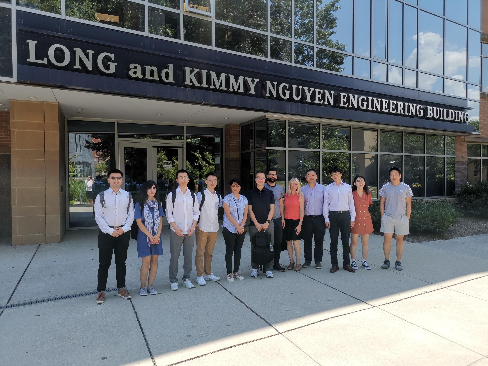
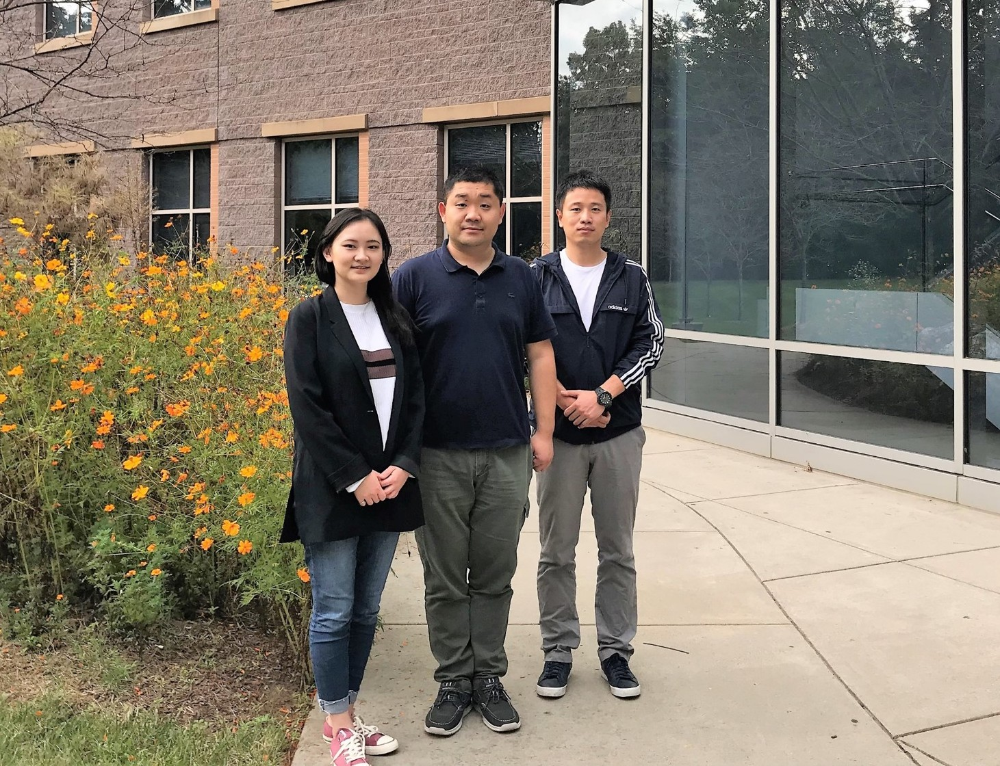

Latest News
- June 19th, 2019, Dr. Ji and Yitong Li attended the 2019 i3ce conference.
Yitong Li presented her work at the 2019 ASCE International Conference on Computing in Civil Engineering.
Her presentation was about measuring operator quality performance through a work experience-integrated Bayesian prior determination.
- Dr. Ji received the 2018 ASCE outstanding reviewer award for the ASCE Journal of Construction Engineering and Management.
- March 14th, 2019, Dr. Ji was awarded Jeffress Trust Awards Program in Interdisciplinary Research for the project "Decision Support System for Enhanced Infrastructure System Serviceability Following Natural Disasters: A Social Media Mining Approach".
- October 11th, 2018, Dr. Ji gave a seminar presentation at the University of Maryland. The presentation was about simulation-based analytics and the application of the simulation-based analytics in construction quality management.
Highlights
|  |  |
| Dr. Hsi-Hsien Wei from Hong Kong Polytechnic University visited George Mason University |
From left: Ph.D.student Yitong Li, Dr. Ji, and Ph.D.student Yudi Chen. |